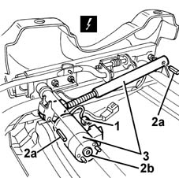

7045J30 front seat ride motor, l/h or r/h - r+r following electrical wiring check
- Path
- Procedures > 70 FITTINGS > 7045 FRONT SEATS > 7045J front seat movement > 7045J30 front seat ride motor, l/h or r/h - r+r following electrical wiring check
- Kind
- repair procedure (removal / refitting; the operation number is the code)
- Applies to
- all engines; all production periods
- Interactive page
- https://sloeber94.github.io/elrnDB-fMltpl/en/#/2892241
Applies to: all engines; all production periods
 Removing
Removing
 Refitting
Refitting7045A10 l/h or r/h front seat (one) - r+r (left side)
1. Disconnect the electrical connection for the motor with operating switch.
 | Name | Connector |
|---|---|---|
1 | Driver's seat ride motor |
2. Take out the flexible pins (2a) securing the motor-control screw assembly.
The motor and its control screw can be made to make small movements (to make it easier for the flexible pins to come out) by using the square connection (2b).
3. Withdraw the motor complete with control screw.

Applies to: all engines; all production periods
Refitting
RemovingCheck that the motor-control screw assembly is working. If necessary, conduct an electrical test on the motor.
Fit the motor-control screw assembly in its seating and secure it with the flexible pins.
The motor and its control screw can be made to make small movements (to make it easier to refit the flexible pins) by using the square connection on the motor.
Check the motor electrical connection.
7045A10 l/h or r/h front seat (one) - r+r (left side)
Check the operation of the seat lifting system.